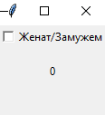
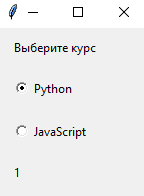

Виджеты
Checkbutton
Элемент Checkbutton представляет собой флажок, который может находиться в двух состояниях: отмеченном и неотмеченном. Простейший Checkbutton:
from tkinter import *
root = Tk()
root.geometry('100x100')
ismarried = IntVar()
ismarried_checkbutton = Checkbutton(text="Женат/Замужем", variable=ismarried)
ismarried_checkbutton.pack()
ismarried_label = Label(textvariable=ismarried)
ismarried_label.place(relx=.5, rely=.5, anchor="c")
root.mainloop()

Конструктор Checkbutton принимает ряд параметров, с помощью которого можно настроить отображение флажков:
activebackground: фоновый цвет флажка в нажатом состоянии
activeforeground: цвет текста флажка в нажатом состоянии
bg: фоновый цвет флажка
bitmap: монохромное изображение для флажка
bd: граница вокруг флажка
command: ссылка на функцию, которая вызывается при нажатии на флажок
cursor: курсор при наведении на элемент
disabledforeground: цвет текста в состоянии DISABLED
font: шрифт
fg: цвет текста
height: высота элемента
image: графическое изображение, отображаемое на элементе
justify: выравнивание текста, принимает значения CENTER, LEFT, RIGHT
offvalue: значение ассоциированной с флажком переменной IntVar в неотмеченном состоянии, по умолчанию равно 0
onvalue: значение ассоциированной с флажком переменной IntVar в отмеченном состоянии, по умолчанию равно 1
padx: отступы справа и слева от текста до границы флажка
pady: отступы сверху и снизу от текста до границы флажка
relief: стиль флажка, по умолчанию имеет значение FLAT
selectcolor: цвет квадратика флажка
selectimage: изображение на флажке, когда он находится в отмеченном состоянии
state: состояние элемента, может принимать значения NORMAL (по умолчанию), DISABLED и ACTIVE
text: текст элемента
underline: индекс подчеркнутого символа в тексте флажка
variable: ссылка на переменную, как правило, типа IntVar, которая хранит состояние флажка
width: ширина элемента
wraplength: устанавливает перенос символов на другую строку в тексте элемента
Radiobutton
Элемент Radiobutton представляет переключатель, который может находиться в двух состояниях: отмеченном или неотмеченном. Но в отличие от Checkbutton переключатели могут создавать группу, из которой одномоментно мы можем выбрать только один переключатель. Используем переключатели:
from tkinter import *
root = Tk()
root.title("GUI на Python")
root.geometry("150x170")
header = Label(text="Выберите курс", padx=15, pady=10)
header.grid(row=0, column=0, sticky=W)
lang = IntVar()
python_checkbutton = Radiobutton(text="Python", value=1, variable=lang, padx=15, pady=10)
python_checkbutton.grid(row=1, column=0, sticky=W)
javascript_checkbutton = Radiobutton(text="JavaScript", value=2, variable=lang, padx=15, pady=10)
javascript_checkbutton.grid(row=2, column=0, sticky=W)
selection = Label(textvariable=lang, padx=15, pady=10)
selection.grid(row=3, column=0, sticky=W)
root.mainloop()

Для настройки переключателя конструктор Radiobutton, как и другие конструкторы виджетов, принимает два параметра:
Конструктор Checkbutton принимает ряд параметров, с помощью которого можно настроить отображение флажков:
activebackground: фоновый цвет флажка в нажатом состоянии
activeforeground: цвет текста флажка в нажатом состоянии
bg: фоновый цвет флажка
bitmap: монохромное изображение для флажка
borderwidth: граница вокруг переключателя
command: ссылка на функцию, которая вызывается при нажатии на флажок
cursor: курсор при наведении на элемент
font: шрифт
fg: цвет текста
height: высота элемента
image: графическое изображение, отображаемое на элементе
justify: выравнивание текста, принимает значения CENTER, LEFT, RIGHT
padx: отступы справа и слева от текста до границы флажка
pady: отступы сверху и снизу от текста до границы флажка
relief: стиль флажка, по умолчанию имеет значение FLAT
selectcolor: цвет квадратика флажка
selectimage: изображение на флажке, когда он находится в отмеченном состоянии
state: состояние элемента, может принимать значения NORMAL (по умолчанию), DISABLED и ACTIVE
text: текст элемента
textvariable: устанавливает привязку к переменной StringVar, которая задает текст переключателя
underline: индекс подчеркнутого символа в тексте флажка
variable: ссылка на переменную, как правило, типа IntVar, которая хранит состояние флажка
value: значение переключателя
width: ширина элемента
wraplength: устанавливает перенос символов на другую строку в тексте элемента